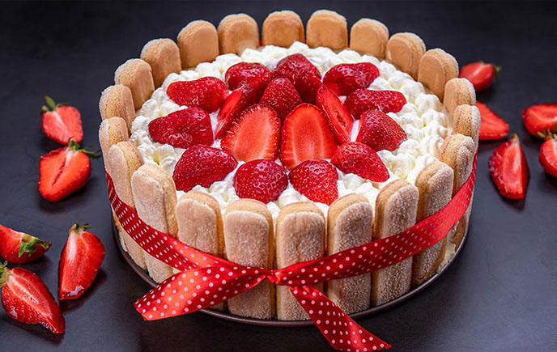

Carlota navideña
- 130 gramos de mantequilla
- 130 gramos de azúcar
- 130 gramos de almendra
- 1 copita de Kirsch
- 160 gramos de nata montada
- 1 vainilla en polvo al gusto
- 15 bizcochos en forma de deditos
Preparación
- En un mortero machaca las almendras, añadiendo, poco a poco el azúcar y la vainilla.
- Agrega el Kirsch y por último, añade la nata montada, mezclándolo todo con cuidado.
- Forra un molde de torta con los bizcochos, y vierte sobre él la mezcla anterior.
- Introduce el postre en el refrigerador por 3 horas.
- Una vez pasado ese tiempo desmolda el postre sobre una fuente, y decóralo con nata montada y frutas confitadas.